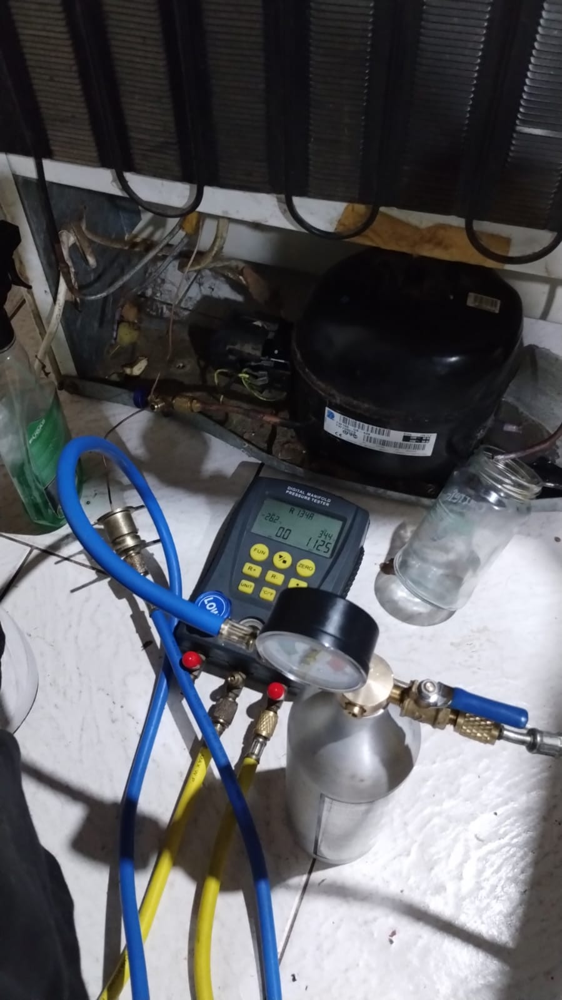

Atención a domicilio en todo Mar del Plata. Reparación de heladeras con freezer, No Frost y comerciales con repuestos de alta calidad y garantía.
Coordinamos una visita técnica para revisar la heladera directamente en tu hogar o negocio.
Detectamos fugas de gas, fallas en el motocompresor, placas electrónicas, sensores o termostatos.
Te detallamos el costo final desglosando la mano de obra y los componentes a reemplazar.
Reparamos todas las marcas y modelos del mercado nacional e importado en Mar del Plata:
Coordiná tu visita técnica a domicilio hoy mismo.
Trabajo de reparación realizado en Mar del Plata:
